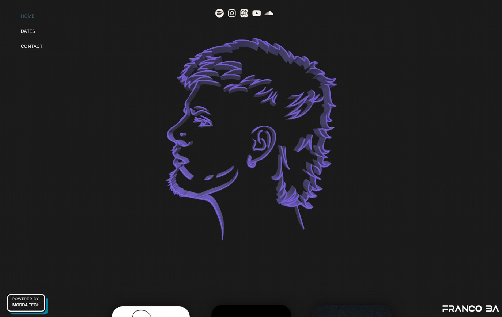
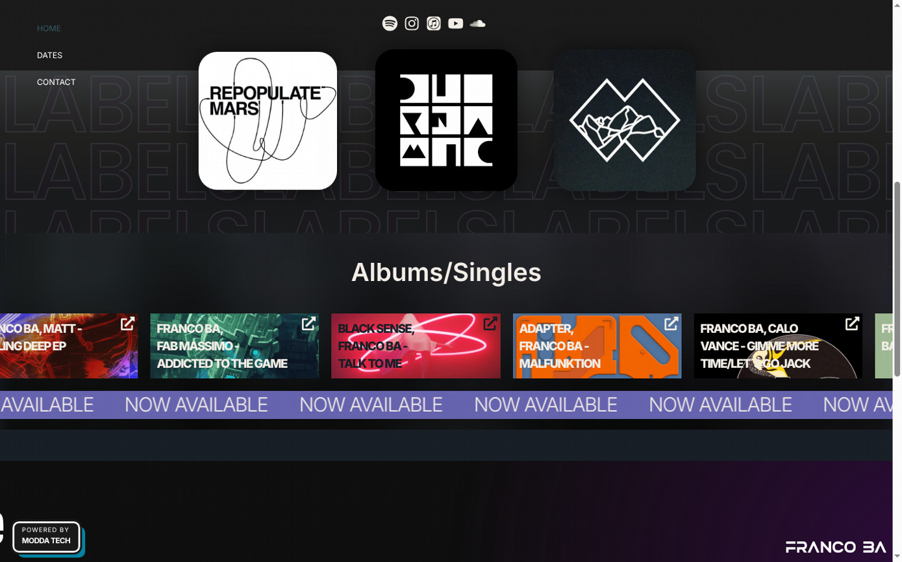
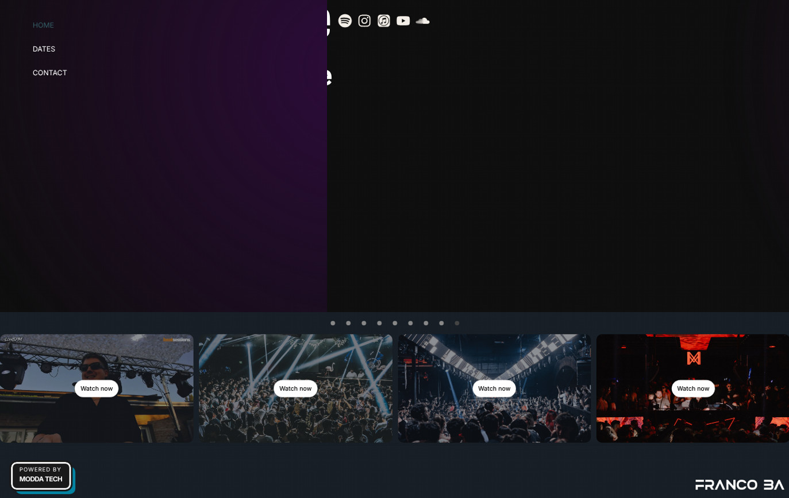

Website and live-date management for a DJ/producer. Franco BA is an Argentine DJ and producer from the new generation of Buenos Aires electronic artists — tech house and minimal, with releases on international labels such as Repopulate Mars and Experts Only.
He needed one place for his music, releases and upcoming shows. I built a design-focused site on WordPress, PHP and JavaScript where event information is managed through Google Forms and Google Apps Script, stored in a spreadsheet and synced to the site automatically — no code changes needed to publish a new date.
The site opens on a dark canvas with a 3D version of the Franco BA logo, the main navigation and direct links to every platform where his music lives — Spotify, Instagram, Apple Music, YouTube and SoundCloud.

Home — 3D logo and platform links
The site on mobile
Show dates change every week, so they could not depend on a developer:
The artist manages events, images and newsletter subscribers himself, without technical support.
Below the hero, the labels he has released on sit over an outlined “LABELS” typographic background, followed by an Albums/Singles carousel linked to Spotify and a scrolling “Now available” band — keeping images, logos and music links visually consistent.

Labels, Albums/Singles carousel and the “Now available” band

Sets and videos carousel
Dates and content stay up to date on their own, the site absorbs new shows, promos and releases without complex changes, and visits to the events and content section grew 16% after launch.